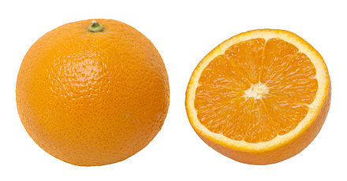

The orange is the fruit of various citrus species in the family Rutaceae (see list of plants known as orange); it primarily refers to Citrus × sinensis, native to China. It is also called sweet orange, to distinguish it from the related Citrus × aurantium, referred to as bitter orange. The sweet orange reproduces asexually (apomixis through nucellar embryony); varieties of sweet orange arise through mutations.
The orange is a hybrid between pomelo (Citrus maxima) and mandarin (Citrus reticulata). The chloroplast genome, and therefore the maternal line, is that of pomelo. The sweet orange has had its full genome sequenced.
The orange originated in Ancient China and the earliest mention of the sweet orange was in Chinese literature in 314 BC. As of 1987, orange trees were found to be the most cultivated fruit tree in the world. Orange trees are widely grown in tropical and subtropical climates for their sweet fruit. The fruit of the orange tree can be eaten fresh, or processed for its juice or fragrant peel. As of 2012, sweet oranges accounted for approximately 70% of citrus production.
In 2017, 73 million tonnes of oranges were grown worldwide, with Brazil producing 24% of the world total, followed by China and India.